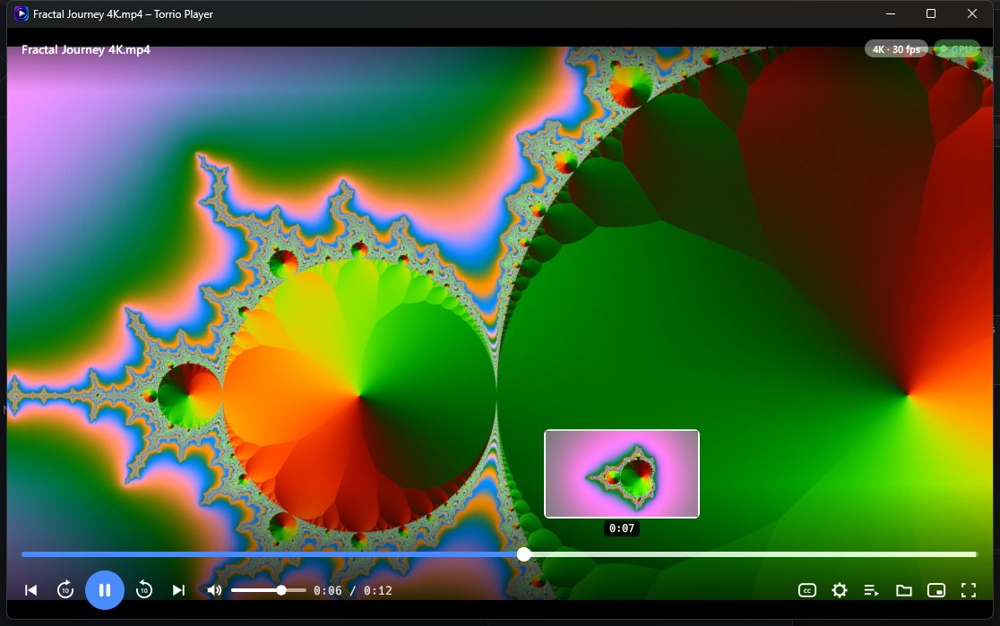

Free video player for WindowsEvery video, smooth. Even 4K.
Torrio Player decodes on your graphics card, so big 4K files and long recordings play smoothly and jump instantly. Open any video on your PC, a stream address or a video page.

A full player, light on your PC
Everything you expect from a media player, with the picture never leaving the graphics card.
Plays on the graphics card
NVIDIA, AMD and Intel decoding. 4K and 60 fps stay smooth while the processor rests.
Instant seeking, with previews
Hover the timeline to see the moment; drag and the picture follows. Jumps are instant, even in big .ts files.
Subtitles and audio tracks
Subtitles in the file or a matching .srt are found by themselves. Size, position and delay; any audio track.
Speed, picture and repeat
0.25× to 4× with natural pitch, brightness and zoom, rotate, A–B repeat and frame stepping.
Mini player and folder list
A small always-on-top window for working while watching, and the other videos of the folder a click away.
Picks up where you stopped
Reopen a video and continue from the same moment. The start screen lists what you were watching.
Open it however suits you
Torrio Player comes with Torrio and needs no separate install. It runs on its own: the download manager doesn't have to be open.
From Torrio's icon
Right-click Torrio's icon next to the clock and choose Video player. The main window stays closed.
Its own desktop icon
Turn on its desktop or Start menu icon in Torrio › Options › Add-ons, and start it like any other app, with its own taskbar button.
Open with
Right-click a video file in File Explorer › Open with › Torrio Player. Your files keep their own default program.
Good to know
Is Torrio Player free?
Yes. It comes with Torrio, which is free, with no ads and no account.
Does the download manager have to be open?
No. Torrio Player can be opened from its own desktop icon or from File Explorer, and runs on its own.
Which files does it play?
MP4, MKV, TS, M2TS, AVI, WebM, MOV, WMV, FLV, MPEG, 3GP and more, plus stream addresses (HLS and DASH) and video pages through Torrio's video tools.
Why is it smoother than other players for big files?
It uses the libmpv engine and your graphics card to decode and show the picture, so even 4K plays without using much of the processor.